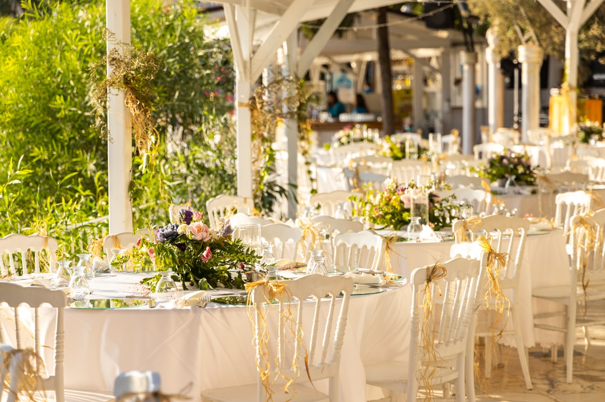

Ottimizza la Gestione delle Partecipazioni di Nozze con LOVE Partecipazioni Digitali per Wedding Planner e Agenzie Eventi

Come LOVE Partecipazioni Digitali Rivoluziona la Gestione delle Partecipazioni per Wedding Planner, Agenzie Eventi e Sposi
- Il mercato delle partecipazioni cartacee è caratterizzato da sprechi economici e difficoltà organizzative.
- Gestire intolleranze alimentari e RSVP con metodi tradizionali genera caos e errori nel catering.
- LOVE Partecipazioni Digitali offre una soluzione innovativa, integrata e user friendly per ottimizzare l’intero processo.
Analisi Approfondita della Notizia e delle Implicazioni Operative
Nel settore wedding planning e organizzazione eventi, l'efficacia nell'invio e nella gestione delle partecipazioni è un elemento cruciale che incide fortemente sull’esperienza degli sposi e sulla logistica di tutta la cerimonia. Nonostante l’evoluzione tecnologica, molte agenzie e wedding planner continuano a fare affidamento su partecipazioni cartacee tradizionali, spesso costose e poco pratiche. Questi metodi portano a problemi in termini di tempistiche, costi e difficoltà nel raccogliere dati precisi, in particolare alla voce intolleranze alimentari, fondamentali per un catering impeccabile.
Le partecipazioni cartacee, inoltre, non solo comportano un investimento economico elevato tra stampa, spedizione e gestione, ma limitano la capacità di personalizzazione e aggiornamento in tempo reale delle informazioni. La mancanza di un sistema digitale integrato si traduce in un surplus di lavoro manuale, errori nella raccolta delle risposte e difficoltà nel coordinare i fornitori coinvolti. Ciò si riflette in inefficienze operative e potenziali disguidi durante il ricevimento.
Le Conseguenze e i Costi di Non Agire
Il persistere dell’uso esclusivo delle partecipazioni cartacee si traduce in costi nascosti elevati, sia economici che gestionali. Innanzitutto il budget per la stampa e l’invio postale può facilmente superare alcune centinaia di euro per ogni matrimonio, soprattutto in contesti di nozze con molti invitati. Questo rappresenta uno spreco che incide fortemente sul conto finale degli sposi.
Dal punto di vista operativo, il caos nella gestione degli RSVP e delle specifiche intolleranze alimentari può causare errori gravi e imprevisti di ultima ora. La comunicazione tra wedding planner, catering e sposi diventa meno fluida, con ricadute negative sul servizio offerto e, in definitiva, sull’esperienza degli invitati.
Inoltre, i metodi tradizionali integrano poco la personalizzazione: spesso le partecipazioni sono anonime o poco interattive, perdendo l’opportunità di trasmettere l’unicità dell’evento attraverso un design accattivante e coinvolgente. Tutto ciò comporta rallentamenti, rischio di dati incompleti e difficoltà a rispettare scadenze importanti, aggravando lo stress organizzativo.
Come LOVE Partecipazioni Digitali Risolve il Problema
LOVE Partecipazioni Digitali, il SaaS sviluppato da RM Studio, è la risposta ideale per superare queste criticità operative. Pensato specificamente per Wedding Planner, Agenzie Eventi e gli stessi sposi, questo sistema combina tecnologia avanzata e design raffinato, reinventando il concetto tradizionale di partecipazioni di nozze.
La piattaforma consente di creare partecipazioni digitali d’autore con un’apertura in 3D di grande effetto, valorizzando ogni matrimonio con un tocco di esclusività e stile. Grazie al Monogram Studio AI integrato, è possibile personalizzare ogni dettaglio grafico in modo immediato, generando partecipazioni uniche, pronte per essere condivise con facilità.
Nel cuore della soluzione, la gestione degli RSVP diventa un processo semplice, automatico e sicuro, dove gli invitati possono indicare con chiarezza eventuali intolleranze alimentari o preferenze, facilitando il lavoro del catering. Importante è la funzione di export Excel che permette allo chef di ricevere informazioni precise e aggregate, ottimizzando il servizio di ristorazione e riducendo al minimo i rischi di errori.
La diffusione delle partecipazioni avviene in modo smart tramite WhatsApp 1-Tap: un invio rapido e senza attrito che garantisce la massima partecipazione e puntualità nelle risposte, eliminando i costi e i tempi della spedizione tradizionale.
| Gestione Tradizionale | Con LOVE Partecipazioni Digitali |
|---|---|
| Alti costi di stampa e spedizione cartacea | Partecipazioni digitali a costo contenuto, nessuna stampa |
| Gestione manuale e spesso disorganizzata delle intolleranze | Gestione automatica RSVP con export dati Excel per chef |
| Comunicazione lenta e poco interattiva | Invio WhatsApp 1-Tap in tempo reale, coinvolgente e immediato |
| Bassa personalizzazione grafica | Monogram Studio AI per design esclusivi e personalizzati |
| Difficoltà nel monitoraggio RSVP e aggiornamenti | Dashboard intuitiva per controllo completo e reportistica |
💡 Ti è stato utile questo approfondimento?
Condividilo con un collega o un amico del settore Wedding Planner, Agenzie Eventi e Sposi a cui potrebbe interessare!
FAQ: Domande Frequenti sull’Utilizzo di LOVE Partecipazioni Digitali
1. Come posso personalizzare graficamente le partecipazioni digitali?
LOVE integra un Monogram Studio AI che consente di creare design esclusivi, personalizzando facilmente font, colori e dettagli grafici per rispecchiare il tema del matrimonio.
2. È possibile integrare la gestione dei dati raccolti con il catering?
Sì, grazie all’export in Excel, tutte le informazioni su intolleranze e preferenze alimentari vengono trasferite in modo semplice e preciso per supportare lo chef in cucina.
3. Qual è la differenza tra la licenza Sposi e il pannello Agency Hub B2B?
La licenza Sposi è pensata per un singolo matrimonio al costo di €149, mentre il pannello Agency Hub B2B, a €490, consente la gestione centralizzata e scalabile di fino a 10 matrimoni, ideale per agenzie e wedding planner professionisti.
Inizia Subito
Licenza Sposi da €149 o Pannello Agency Hub B2B a €490 per 10 matrimoni.
Fonti Ufficiali e Risorse Esterne
Scopri l'Intelligenza Artificiale per la tua attività
Ottimizza i processi e aumenta le vendite con le soluzioni B2B di RM Studio.
Scopri LOVE Partecipazioni Digitali